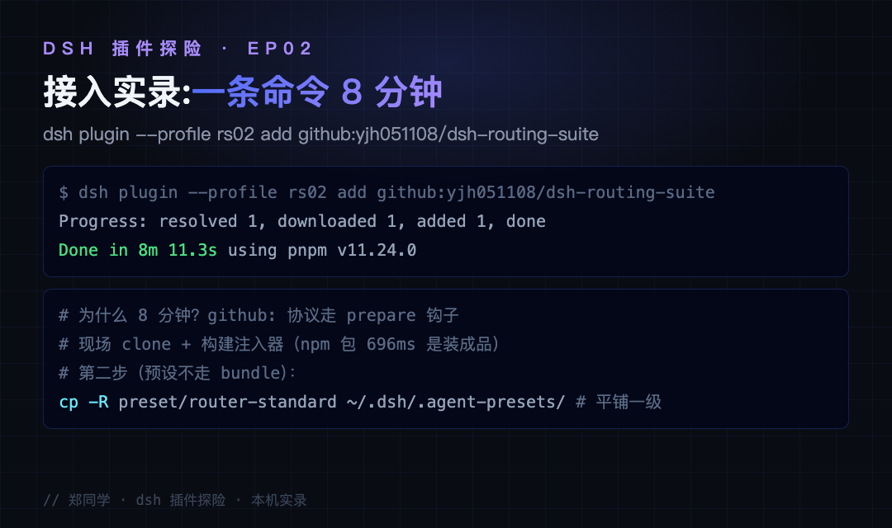
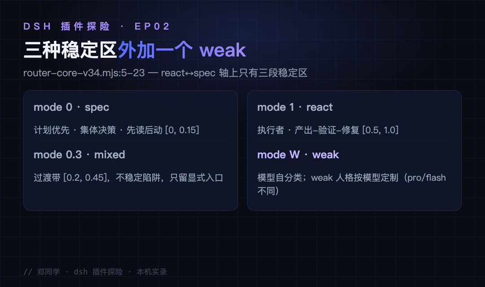
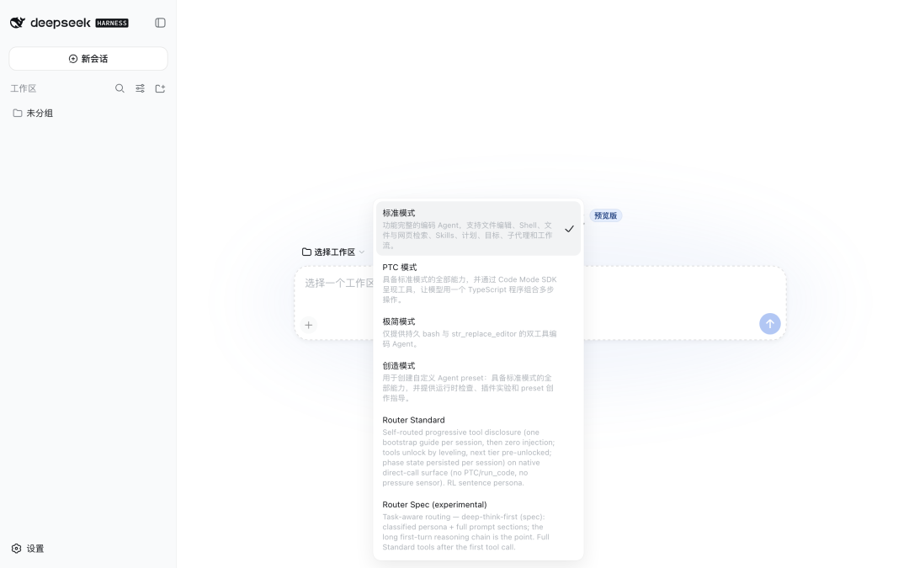
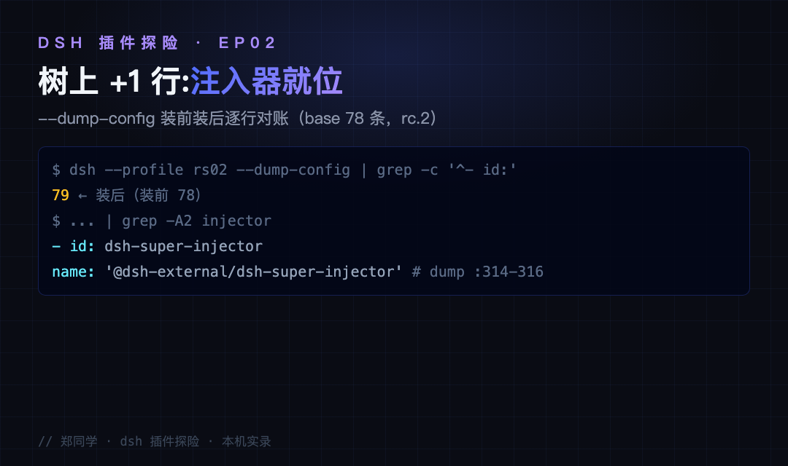
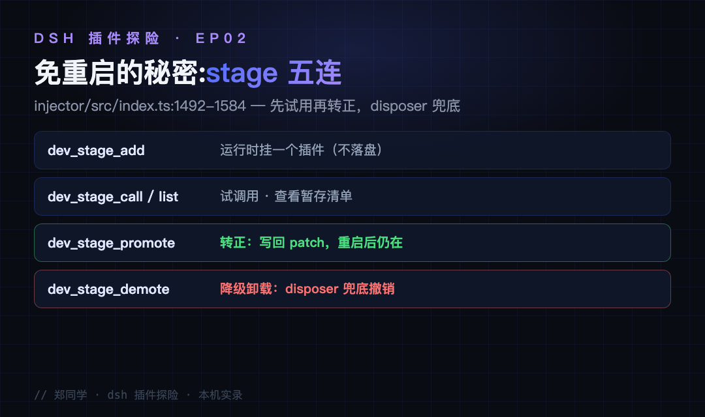

用 agent 干活，你大概率遇过这三种憋屈：
场景一：复杂活，它太毛躁。 让它排查一个报错，它跳过日志直接改文件，方向错了返工三轮。你想要的其实是：先读日志、列计划、给方案，确认了再动手。
场景二：简单活，它太磨叽。 让它改个按钮颜色，它先列三段计划、建好目录结构、写半页说明才动手。你想要的其实是：别废话，直接改，改完说一声。
场景三：你想要"按任务选模型"——简单任务走便宜快的 DeepSeek，硬任务走强的 GLM，按任务和指令自动分流量。这个想法很自然，但先说结论：这个插件管不了模型，它一行切模型的代码都没有。你配什么模型，它就用什么模型。怎么实现你想要的场景三，文末给三条路。
前两个场景，就是 dsh-routing-suite（作者 yjh051108，star 6.9k）管的事：给 agent 装一个路由器，按任务自动切换"思维模式"——复杂活切计划优先，简单活切直接干。一句话定位注入器 × 思维模式路由，注意它改的是提示词层的"干法"，不是模型层。还是系列固定四段：接入、使用、截图切图看功能、源码简单分析大概实现。
● ● ●
先说清楚"注入器"是什么：runtime injector（运行时注入器），能在 dsh 不重启的前提下，把插件、配置这类东西送进正在运行的进程里。有了它，后面所有路由相关的能力都是热的。
本机实录（dsh v0.1.1-rc.2，临时 profile rs02，不动我的 web）：
$ dsh plugin --profile rs02 add github:yjh051108/dsh-routing-suite
Progress: resolved 1, downloaded 1, added 1, done
Done in 8m 11.3s using pnpm v11.24.0
8 分钟，比上一篇 dsh-context 的 696ms 慢了 700 倍。慢得有理由：上篇是 npm 装成品包，这条走 github: 协议——dsh 的 prepare 钩子现场 clone 源码、现场构建注入器，装的是"从源码到成品"的全过程。想快也有替代路径：先 clone 再 dsh plugin add ./injector，装本地已构建的目录。

图：接入实录——安装输出与 8 分钟耗时解释（本机实录）
第二步容易漏：预设不是插件。这套装里还有两个人格预设（router-standard、router-spec），它们不走 bundle 机制，要手动复制到 dsh 的预设目录，且必须平铺一级——套两层 dsh 就扫描不到：
$ cp -R preset/router-standard ~/.dsh/.agent-presets/
$ cp -R preset/router-spec ~/.dsh/.agent-presets/
用 --dump-config 对账：装前 78 条，装后 79 条，多的那行是 - id: dsh-super-injector（dump 第 314-316 行）。和上一篇的 78 到 79 一个剧本——树上只多一行，能力全是增量。版本锚点：仓库 README 声明 DSH 目标 >=0.1.0-rc.6 <0.2.0，已跟进到 0.1.2-alpha.1。

图：dump 对账——装前 78 装后 79，注入器行号定位
● ● ●
重启 dsh，新会话的预设选择器里多出 Router Standard 和 Router Spec（深度思考优先的变体，适合"先把方案想透再动手"的场景）。选 Router Standard 后，你不需要背任何规则——路由是自动的。走一遍体感，正好对应开头两个场景：发"帮我排查这个报错"，被分类成 spec 姿态，这一轮的提示词换成计划优先、先读日志再动手；发"把这个按钮颜色改了"，切到 react 姿态，直接产出-验证-收工。同一个 agent，两种干活节奏，你只管发消息。

图：重启后预设选择器实拍——Router Standard 与 Router Spec (experimental) 已出现在列表里（本机截图）
对你来说，装完之后的变化是三件小事：发消息前不用再想"这活该用哪种口气"——分类器替你想了；复杂任务的回复开头会先看到计划清单，而不是直接动你的文件；派子代理时每个子代理按自己的任务走路由（dev_mode_subagent），不继承父级的姿势。日常调控也只要两个命令：dev_router_status 看当前路由状态，dev_router_mode 手动切模式。
它还附赠一组"运行时手术台"工具 dev_stage_*：dev_stage_add 把一个插件临时挂上进程（不落盘），dev_stage_call 试调用、dev_stage_list 看暂存清单，好用就 dev_stage_promote 转正写回 patch，不好用 dev_stage_demote 卸载——disposer 自动撤销全部注册。装插件从"下决心改配置"变成"先试再说"。

图：免重启的秘密——dev_stage 五连的生命周期
● ● ●
路由的底层结论写在 preset/router-standard/router-core-v34.mjs 第 5-23 行的注释里，作者把 P1 到 P23 轮实测压缩成一段话：在 react 对 spec 的行为轴上，效果只收敛出三个稳定区，不是一个连续谱。

图：三种稳定区——spec 计划优先、mixed 过渡陷阱、react 执行者，外加 weak 模型自分类
两个实测细节最见功力。一是 weak 人格要按模型定制：Pro 上"spec 句 + few-shot（少样本示例）路由指令"区分度 +5.00，同一款拿到 Flash 上会反向路由，得换成"neutral + classify"（+5.7）——一个人格提示词不能两个模型通吃。注意这是"对着你的模型调措辞"，不是给你换模型。二是近距离引导：每轮在你的消息后面悄悄附一段固定提醒，告诉模型当前该守哪条路由规则。它走 agent/pre-step 与用户消息同请求注入，提示词缓存命中 92-94%、路由成功率 96%；v0.3.0 之前引导是独立的一次调用——等于每轮多付一倍费用，这批修复把账省回来了。
● ● ●
仓库不大，两块各司其职，结构对得上上一篇讲过的"双半身"模式。
注入器（injector/src/index.ts，3319 行）：真正的运行时手术台。核心不是路由，是 dev_stage 生命周期——运行时挂载、试用、转正写回、降级撤销，全程不碰磁盘配置；另有 dev_inject_plugin（:2395）做免持久化的本地插件注入。它还有 web 端的另一半（src/client/index.ts），和 dsh-context 一样是"宿主 + 浏览器半"的组合。路由只是它的第一个客户：分类和人格是预设的事，注入器负责免重启把这些东西送进运行时。
路由核（preset/router-standard/router-core-v34.mjs，213 行）：维护 mode 到行为带的映射和分类人格。最值得学的是它的诚实：mixed 区实测不稳定，注释里直接立牌"陷阱"——实测撑不住的区间不藏着，立牌子告诉你别去。preset.yml 另有一句点题：整套预设走原生直调面，不依赖 run_code，模型看到的就是普通工具。
单任务上还有"三锚"设计，对应你最常见的那种崩溃：让它调研一个方案，它聊着聊着开始改代码；让它改个小问题，它顺手重构了半个项目。三个静态锚点挂在人格里——回顾锚把它拉回最初目标，收敛锚让它做完就收，反跑题锚发现漂移立刻拽回来。README 记录的开放任务完成率从 0% 拉到 100%，这个数字对你的意义是：交给它的开放任务，第一次可以不用全程盯着。
落盘清单也和上一篇同款：profile 的 package.json 多一个 git 依赖和一项 bundle，加上 .agent-presets 下两个预设目录。仓库还维护了一份跟进 dsh 版本的变更记录（preset/CHANGELOG.md）——官方每次动版本，这里就有一次适配记录。
● ● ●
回到开头的场景三，它需要的是另一套东西——"任务 → 模型"的路由。三条路按成本排序：
provider + model（tool-subagent 源码 ：89-91）。玩法：建两个预设，一个默认模型挂便宜的，一个挂强的，按任务选预设。手工路由，五分钟配好。llm/stream 瀑布按内容改 route——注入器就是现成的底子。这是插件机会，不是现成功能。配置 DeepSeek provider 需要你的 DeepSeek API Key，settings 里加一段就能把"走 ds"补上。
● ● ●
github: 命令装注入器（8 分钟是现场构建的成本），预设平铺复制进 .agent-presets；树上 +1 行。下一篇继续探险，候选清单里已经锁了几个高星插件——或者你来点名。
源码地址：